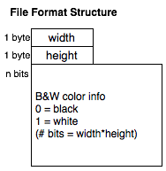

Introduction to Computer Science
B&W Pixelation v.2
Directions:
B&W File Protocol:

width:
height:
bits per pixel: 1
bin:
hex:
Binary Code:
0001 0111 0000 1011
Zoom:
foo
Show pixel border
|
length:
EXAMPLE: Flower 0001001000010110000000000000000000000000001100000000000000010010000000000000010010000000000001101101100000000010010010010000000010010010010000000001101101100000000000010010000000000000010010000000000000001100000000000000001000000000000000001000000000000000001000000000000000001000000000000000001000000000000000111111000000000000011110000000000000011110000000000000011110000000000000000000000000